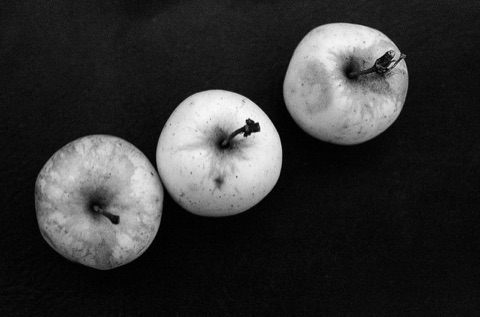
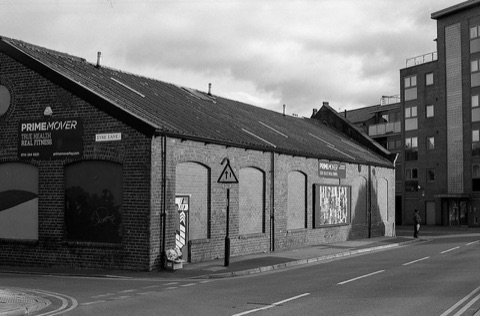

Adox
在产
Silvermax 100 胶卷
- 感光度
- ISO 100
- 类型
- 全色性
- 颗粒
- 细颗粒
- 尺寸
- 35mm
- 分类
- 传统颗粒
- 状态
- 在产
特性 / 手感 · Character
高银量、高锐度、极细腻，一档高反差，黑白影调霸道又干练，适合强调质感的人像/静物。
High silver content, high acutance, ultra-fine grain with strong one-stop contrast. Punchy, clean black-and-white for portrait and still life.
适用场景 · Best for
人像 艺术创作 风光
使用感受
许多用户称它为“六边形战士”：综合实力极强，有摄影师甚至拿它与 Kodak Tri-X 400 相提并论，认为是最好的黑白胶卷之一。影调迷人——灰阶过渡平滑，从阴影的浓郁黑到高光的纯白层次丰富，动态范围令人印象深刻。迫冲性能出色，有用户从 ISO 100 迫冲到 400 仍能获得清晰影像。也有争议：高光环境下若曝光控制不当，高光容易过曝，建议适当降感（如按 ISO 200 曝光）以保护高光细节。
参考价格 · Price
二手多为未开封 / 临期或分装卷，行情与全新接近（约全新价 85%–100%）；停产卷稀缺，常高于原价 · 均随市场波动，仅供参考
全新 New
135约¥60–80
120约¥70–105
二手 Used
135约¥51–80
120约¥60–105
实拍样片



© fishyfisharcade